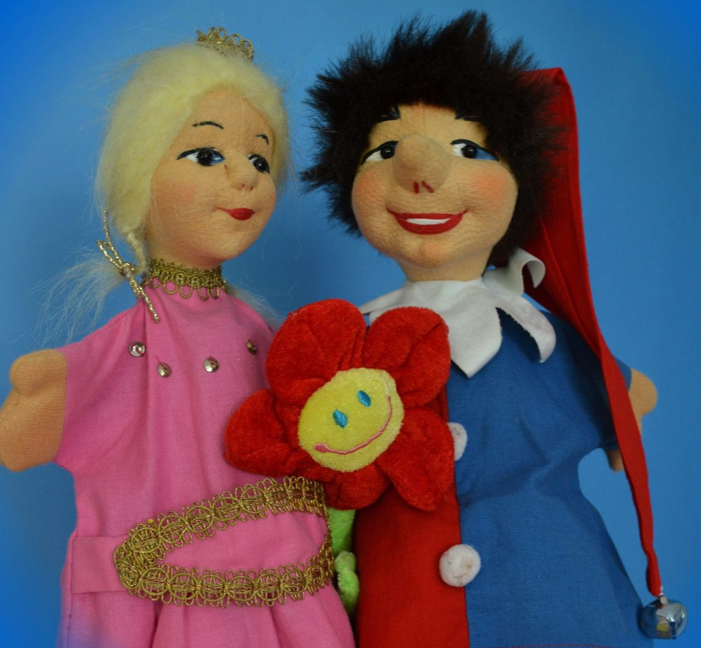

Für jeden Anlass
Anlässe
Ein eingespieltes Team!
Ob groß oder klein, jung oder alt – Luxis Puppentheater sorgt für strahlende Gesichter. Hier eine Auswahl der Anlässe, zu denen ich gerne komme:
- Kindergeburtstage
- Auftritt im Kindergarten
- Erwachsenenunterhaltung
- Sommerfeste
- Besuch im Seniorenheim
- Familienfeste
- Auftritte für städtische Einrichtungen
- Zeitvertreib in der Kinderklinik
- Sonderwünsche sind jederzeit willkommen!